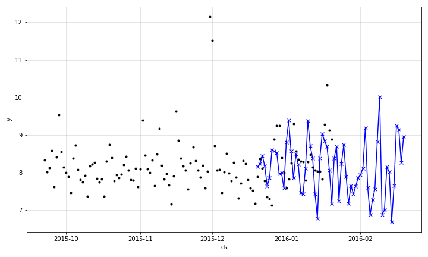

Modelling Auto-Regression¶
AR-Net can be enabled in the NeuralProphet by simply setting an appropriate value to the
n_lags parameter of the NeuralProphet object.
m = NeuralProphet(
n_forecasts=3,
n_lags=5,
yearly_seasonality=False,
weekly_seasonality=False,
daily_seasonality=False,
)
In the above example, we create a forecasting scenario which feeds 5 lags into AR-Net and receives
3 steps as forecasts. Once you have the AR-Net enabled, during forecasting your future_periods value
should be equal to the n_forecasts value specified when creating the NeuralProphet object. Whichever
value you specify for future_periods, it will be converted to the value of n_forecasts with a notice
to the user. This is because, since the AR-Net is built during training such that it has an ouptut size
of n_forecasts, it cannot support any other value during testing.
The plotted components should look like below.
 {: style=”height:600px”}
{: style=”height:600px”}
You can now see auto-regression as a separate component. The corresponding coefficients look like below.
 {: style=”height:600px”}
{: style=”height:600px”}
You can see the relevance of each of the lags when modelling the autocorrelation. You can also specify the num_hidden_layers
for the AR-Net, in order to increase the complexity of the AR-Net.
m = NeuralProphet(
n_forecasts=3,
n_lags=5,
num_hidden_layers=2,
yearly_seasonality=False,
weekly_seasonality=False,
daily_seasonality=False
)
Regularize AR-Net¶
Regularization in AR-Net is done by setting the ar_sparsity parameter in the NeuralProphet object
like below. For more details on setting a value for ar_sparsity, refer to the Section on
Hyperparameter Selection.
m = NeuralProphet(
n_forecasts=3,
n_lags=5,
num_hidden_layers=2,
ar_sparsity=0.01,
yearly_seasonality=False,
weekly_seasonality=False,
daily_seasonality=False
)
Highlight Specific Forecast Step¶
When modelling the autocorrelation, the model in the multi-input, multi-output mode. In this mode, you can highlight the nth step ahead forecast. This means that, you can specifically look at the forecast at the nth step when calculating errors during model training as well as when forecast plotting. This can be done like below.
m = NeuralProphet(
n_forecasts=30,
n_lags=60,
yearly_seasonality=False,
weekly_seasonality=False,
daily_seasonality=False
)
m.highlight_nth_step_ahead_of_each_forecast(step_number=m.n_forecasts)
You can specify any value less than or equal to n_forecasts to the step_number parameter.
Once you do this, the metrics would look like below.
SmoothL1Loss |
MAE |
SmoothL1Loss-3 |
MAE-3 |
RegLoss |
|---|---|---|---|---|
0.272427 |
3.063127 |
0.164296 |
2.407697 |
0.0 |
0.151259 |
2.303768 |
0.144811 |
2.261525 |
0.0 |
0.129990 |
2.140769 |
0.127703 |
2.126293 |
0.0 |
0.116178 |
2.020397 |
0.113719 |
2.005068 |
0.0 |
0.104502 |
1.915078 |
0.101155 |
1.887193 |
0.0 |
In the forecast plots, it will focus only on the nth step ahead forecast. This is shown below for the fir of the model.
{: style=”height:400px”}